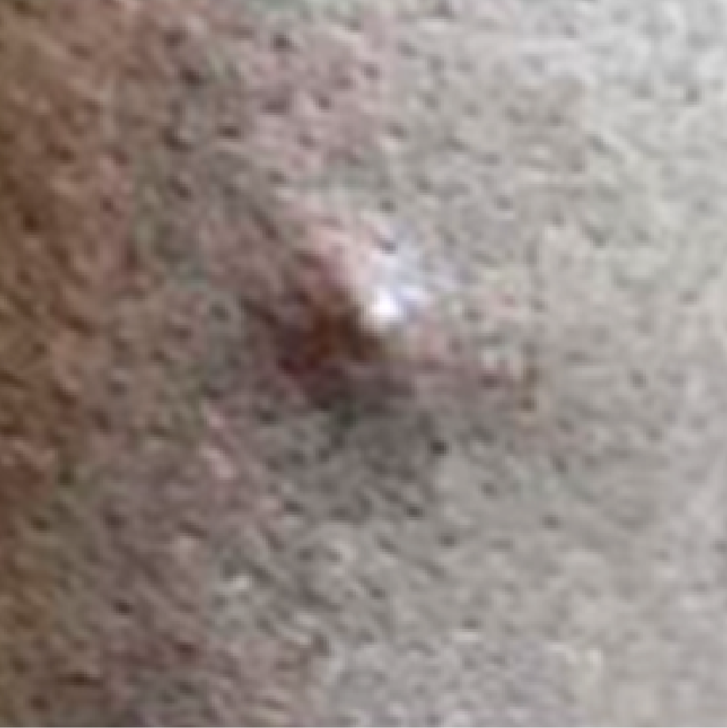
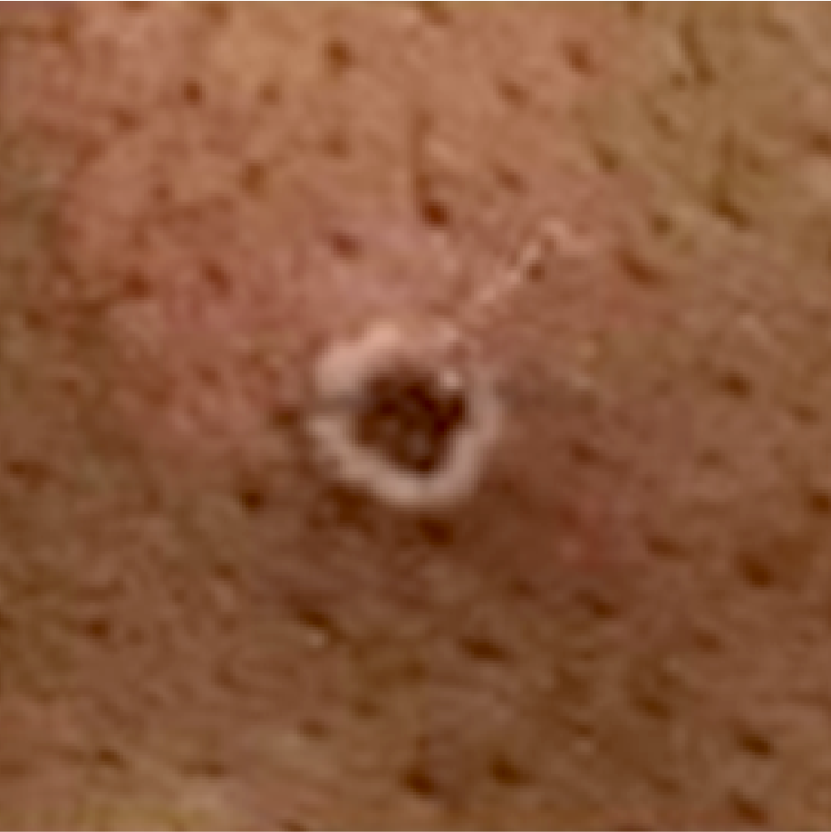
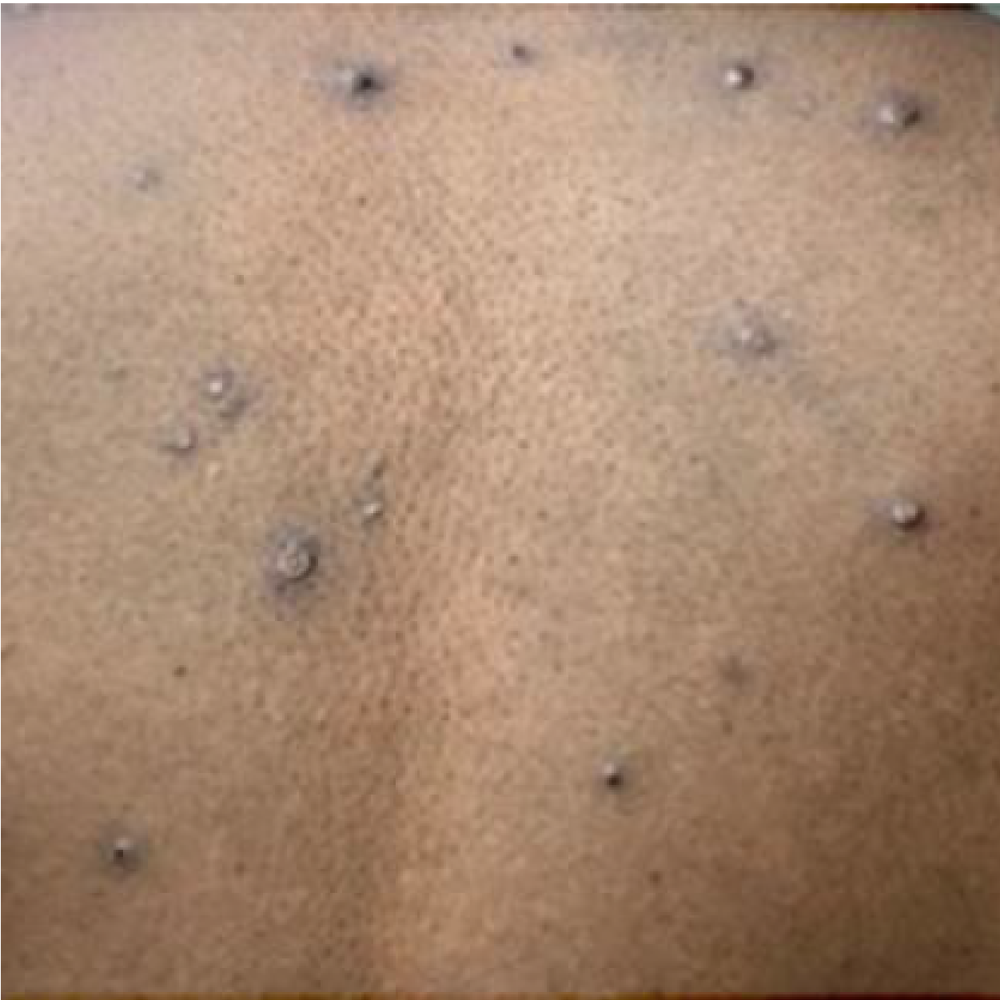
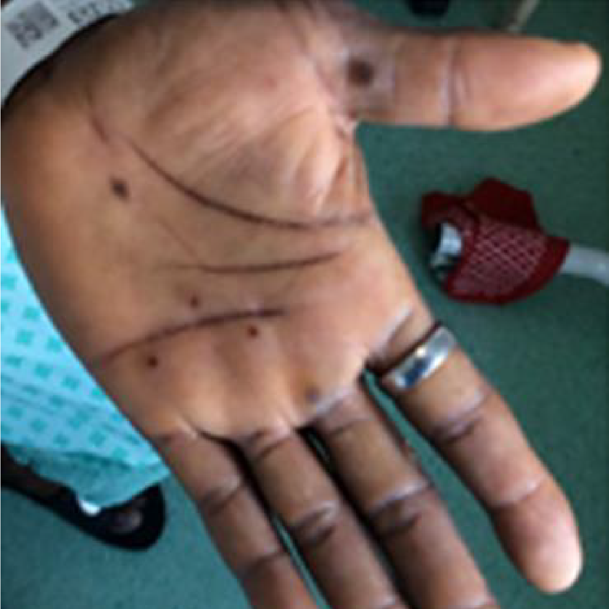
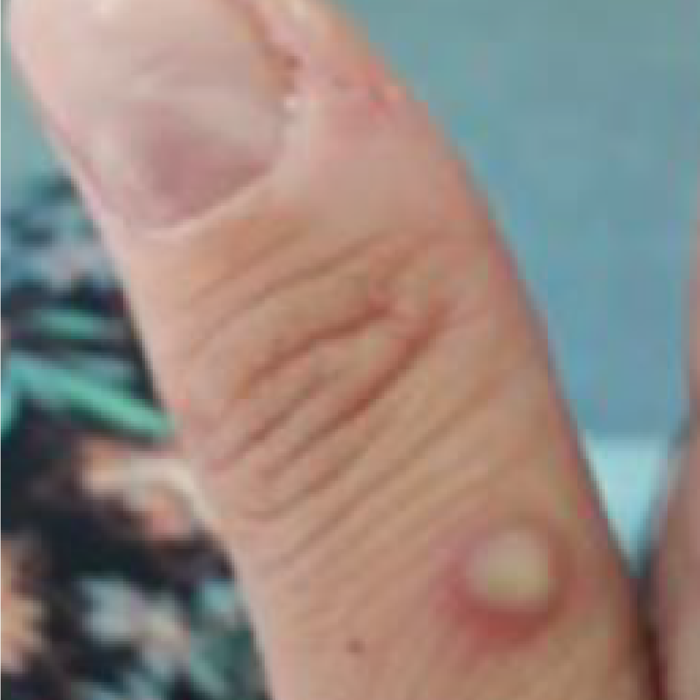

SOBRE O MATERIAL
 Objetivo Geral
Objetivo Geral
Este material tem como objetivo apresentar a importância de se realizar orientações para a população e grupos específicos, ressaltando o planejamento e execução de estratégias de prevenção e cuidado.
 Objetivos de Aprendizagem
Objetivos de Aprendizagem
 Carga horária de estudo
Carga horária de estudo
05 horas
MEDIDAS DE PREVENÇÃO E CUIDADO CONTRA A MPOX PARA A POPULAÇÃO GERAL
Bom, agora que você já entendeu mais sobre a doença, como orientar as pessoas a se protegerem da mpox? Essa unidade contém informações que podem ser usadas para orientar diferentes grupos populacionais, escritas de forma a poderem ser usadas diretamente na orientação de prevenção.

Existem algumas medidas essenciais que podem ser adotadas para prevenir a infecção pelo MPXV (CDC, 2022):
Clique nos itens para interagirEvite contato próximo, ou seja, contato pele com pele com pessoas que tenham lesão de pele suspeita ou confirmada de mpox:
Reduza o número de parceiros sexuais enquanto o surto atual estiver ativo e a imunização não estiver amplamente disponível, sabendo que:
É fundamental higienizar as mãos com água e sabão ou álcool em gel 70%, principalmente antes de se alimentar e/ou tocar a face e depois de utilizar o sanitário.
Tenha cuidado! Ser vacinado contra varíola no passado não necessariamente garante imunidade contra a mpox. Não confie na eventual imunização passada - mantenha os cuidados hoje!
Curiosidade
Pessoas que estão planejando ir a eventos sociais devem se preocupar com a mpox?
Caso esteja planejando ir a algum evento social, como festas/eventos (raves, casas noturnas ou festivais, por exemplo), é importante considerar o risco a que estará exposto durante o evento. A avaliação do risco deve levar em consideração desde o número de pessoas até a distância e contato entre elas.
Mais adiante conheceremos os cuidados necessários para a organização e participação de eventos de massa e uso de transportes coletivos.
ORIENTAÇÕES PARA PESSOAS COM SUSPEITA DA DOENÇA - DIRECIONAMENTO PARA PROCURA DOS SERVIÇOS DE SAÚDE
Vale destacar que a mpox também pode provocar sintomas como febre, calafrios, linfonodos inchados (ínguas), cansaço, dor muscular, dor nas costas, dor de cabeça, dor de garganta, congestão nasal e tosse. Esses sinais e sintomas podem variar. Alguns deles podem estar ou não presentes e aparecer antes ou depois das lesões na pele (WHO, 2022a). Fique atento: o aspecto das lesões também pode variar, conforme a cor da pele (Figura 2).

Figura 01 - Lesão cutânea de mpox em seus vários estágios:
Clique na imagem para interagir.





Figura 2 - Lesões de mpox em diferentes cores de pele
Clique na imagem para interagir.


Saiba mais!
AS LESÕES PODEM COÇAR E/OU SER DOLOROSAS. FIQUE ATENTO ÀS SUAS VARIAÇÕES.
Importante: Enquanto os sinais e sintomas que a pessoa está manifestando não forem descartados para mpox , lembre-se de que é importante manter o isolamento domiciliar!
Vale ressaltar que, além do isolamento, algumas medidas simples podem evitar transmissão para outras pessoas e/ou complicações:

CONTENÇÃO DA DOENÇA EM SERVIÇOS DE SAÚDE E ORIENTAÇÕES E CUIDADO PARA A SAÚDE DO TRABALHADOR DA SAÚDE
Os serviços de saúde, incluindo os de assistência direta à população e os laboratórios, são locais de especial interesse para a contenção da disseminação da mpox, por reunirem pacientes potencialmente com a doença e/ou amostras clínicas infectantes e população suscetível, sejam trabalhadores da saúde, sejam outros pacientes e acompanhantes presentes simultaneamente no mesmo local. As medidas de contenção adotadas pelos serviços de saúde objetivam tanto proteger a saúde dos trabalhadores quanto evitar a contaminação de outras pessoas e a disseminação da doença por novos infectados (TITANJI, et al., 2022).
São considerados trabalhadores da saúde todos aqueles que atuam em espaços e estabelecimentos de saúde, incluindo tanto os profissionais da saúde (por exemplo, enfermeiros, médicos, maqueiros, biólogos, técnicos de enfermagem e de laboratório, nutricionistas, farmacêuticos, bioquímicos e fisioterapeutas) quanto aqueles que trabalham em estabelecimentos de saúde e que não prestam serviços diretos de assistência à saúde das pessoas (por exemplo, os que atuam na administração, recepção, segurança e serviços gerais) (BRASIL, 2020).
As condições em que o atendimento é realizado podem constituir fatores determinantes para a ocorrência de mpox nos trabalhadores que estão em contato direto com casos suspeitos ou confirmados, considerando que a doença é transmitida por contato com pacientes infectados, que podem estar presentes nos serviços de saúde.

A Constituição Federal do Brasil, em seu capítulo II, artigo 7°, determina que todos os serviços de saúde, devem assegurar, aos trabalhadores que atuam nos serviços, tanto empregados, como terceirizados e pertencentes a outra modalidade de vínculo, a adoção de medidas e mecanismos de proteção e promoção à saúde (BRASIL, 1988).
Situações e Fatores de Risco à Saúde dos Trabalhadores
Você já parou para pensar que o trabalhador da saúde pode passar por diferentes situações de risco que favorecem o contágio da mpox?
Diversos fatores e situações podem determinar as chances de os trabalhadores que atuam na área da saúde adquirirem mpox, entre eles: riscos relacionados aos procedimentos/atividades que executam; duração da jornada de trabalho; quantidade de pacientes que atendem; uso inadequado de Equipamentos de Proteção Individual (EPI), o que abrange o processo de paramentação e desparamentação, a higienização inadequada das mãos, o descarte incorreto de resíduos sólidos e a desinfecção ou esterilização de equipamentos. É necessário investir na capacitação e na educação continuada desses trabalhadores sobre aspectos de segurança e saúde relativos ao ambiente de trabalho, possibilitando que realizem suas atividades de modo a cuidar da sua saúde e da saúde dos outros. É preciso também garantir jornadas de trabalho e número de profissionais compatíveis com a demanda psíquica e física da função, além de adequado monitoramento e avaliação dos processos de trabalho.
Medidas de Controle, Prevenção e Proteção à Saúde dos Trabalhadores da Saúde
As medidas de controle, prevenção e proteção aos trabalhadores que atuam na área da Saúde incluem a disponibilidade e o uso adequado dos EPIs e a adoção de medidas de engenharia e administrativas nos ambientes e processos de trabalho.
Essas medidas devem orientar a identificação e a intervenção nos fatores e situações de risco aos quais os trabalhadores podem estar expostos durante a execução de suas atividades, visando eliminá-las ou controlá-las. Na maioria das situações, será necessária uma combinação dessas medidas para proteger os trabalhadores da exposição ao mpox.
Equipamentos de Proteção Individual (EPIs)Os EPIs adequados e usados corretamente são importantes para assegurar a saúde dos trabalhadores que atuam na área da saúde e para minimizar os riscos de adoecimento por mpox.
Curiosidade
Você sabia que o acesso dos trabalhadores aos EPIs em quantidade e qualidade adequadas é responsabilidade do empregador, seja público, seja privado, em regime da CLT ou estatutário, assim como o treinamento adequado dos trabalhadores, a supervisão do uso adequado e a manutenção e reposição necessárias desses equipamentos segundo o fabricante (BRASIL, 2022a).
Os tipos de equipamento necessários para a prevenção de mpox nos serviços de saúde estão relacionados às tarefas executadas, mas, de maneira geral, todos os EPIs devem ser: selecionados com base no risco biológico a que os trabalhadores estão expostos; regularizados pelos órgãos certificadores e pela Anvisa; usados adequadamente; higienizados e/ou descartados periodicamente, conforme recomendações técnicas; e inspecionados, reparados ou substituídos de acordo com instruções do fabricante (BRASIL, 2022b).
No geral, os EPIs a serem utilizados são:

Medidas de Controle de Engenharia
A aplicação das medidas de controle de engenharia deve ser priorizada, pois essas medidas são essenciais para prevenir a propagação e reduzir a concentração de agentes infecciosos no ambiente de trabalho, minimizar o número de áreas contaminadas pelo MPXV e diminuir o número de trabalhadores expostos. Destacamos a seguir algumas dessas medidas (BRASIL, 2020):
Definição e instalação de espaços de acolhimento, triagem e isolamento que possibilitem a identificação de pacientes com suspeita de mpox em área separada dos demais pacientes, antes ou imediatamente após a chegada ao estabelecimento de saúde até haver o atendimento ou o encaminhamento ao serviço de referência (se necessário), limitando a movimentação desses pacientes à área de isolamento;
Manutenção de ambiente adequado para a higienização das mãos. Esse ambiente precisa ter: lavatório/pia com dispensador de sabonete líquido; suporte para papel toalha e papel toalha; lixeira com tampa e abertura sem contato manual para uso dos pacientes e seus acompanhantes, tanto na recepção quanto em outros pontos dentro do serviço, minimizando o possível contato com outros pacientes e evitando a sua circulação pelos serviços de saúde;
Instalação de dispensadores de álcool para a higiene das mãos (sob as formas gel ou solução a 70%) nas salas de espera e em outras áreas com circulação de pacientes suspeitos ou confirmados;
Fornecimento de máscara cirúrgica, e aventais/luvas que cubram as áreas com lesões aos pacientes com suspeita de mpox logo na chegada ao serviço de saúde;
Adoção de coberturas protetoras, que devem ser utilizadas em macas, cadeiras e outros objetos, incluindo as de filme plástico ou papel absorvente, que devem ser removidas e trocadas entre cada atendimento, em conformidade com o estabelecido pela Comissão de Controle de Infecção Hospitalar (CCIH) ou equivalente;
Adoção de classificação de risco das áreas e ambientes laboratoriais em que são manipulados agentes biológicos, segundo a publicação Diretrizes Gerais para o Trabalho em Contenção com Material Biológico do Ministério da Saúde (BRASIL, 2010);
Descarte adequado de resíduos.
Medidas de Controle Administrativo
As medidas de controle administrativo referem-se às alterações nas rotinas de trabalho com o objetivo de reduzir ou eliminar a exposição, duração, frequência ou intensidade de algum risco. Essas medidas devem ser desenvolvidas tanto pelo empregador/contratante quanto pelos trabalhadores. Destacamos a seguir algumas dessas medidas (BRASIL, 2020):
Orientação aos pacientes e acompanhantes sobre a necessidade de adoção de medidas de higiene;
Desenvolvimento de planos de comunicação de emergência, incluindo espaços e canais de comunicação para responder às preocupações dos trabalhadores;
Promoção de educação e saúde, e treinamento sobre os fatores de risco, cuidados e medidas de prevenção e controle da mpox que devem ser adotados pelos serviços de saúde, incluindo o manejo adequado do paciente;
Orientação aos trabalhadores da saúde sobre a utilização adequada dos EPIs no atendimento dos pacientes com suspeita de mpox ou com diagnóstico confirmado;
Orientação aos trabalhadores da saúde e acompanhantes dos pacientes para evitar tocar superfícies próximas ao paciente (por exemplo, mobiliário e equipamentos para a saúde), exceto se EPIs estiverem sendo utilizados;
Caso ocorra qualquer erro na utilização dos EPIs e perceber-se o contato com fluidos das lesões, informar a chefia imediata para o devido monitoramento;
Implementação de políticas não punitivas, para permitir que o profissional de saúde que apresente sinais e sintomas de mpox seja afastado do trabalho;
Afastamento de trabalhadores com diagnóstico confirmado da doença e sensibilização para que adotem as medidas de isolamento domiciliar. Essa medida não deve implicar prejuízos trabalhistas aos profissionais;
Estabelecimento de horários de funcionamento estendidos dos serviços de saúde, para minimizar, sempre que possível, a aglomeração de pessoas e o contato entre funcionários e pacientes;
Disponibilização de informações sobre higiene adequada das mãos em banheiros, recepções, enfermarias, quartos, salas de atendimento etc.;
Revisão dos Procedimentos Operacionais Padrão (POPs) de limpeza e desinfecção de ambientes e superfícies para garantir a frequência e as melhores práticas para redução da carga viral nos serviços de saúde;
Monitoramento da ocorrência de transmissão interna de mpox em pacientes e trabalhadores e adoção de medidas apropriadas para controle e mitigação da transmissão;
Monitoramento da efetividade das medidas de proteção e avaliação da adesão dos trabalhadores, cabendo, a qualquer momento, mudança nas estratégias de implementação das medidas para torná-las mais efetivas;
Manutenção de registro de todas as pessoas que prestaram assistência direta ou entraram nos quartos ou em outras áreas de assistência aos pacientes suspeitos ou com diagnóstico confirmado;
Elaboração e disponibilização de forma escrita das normas e rotinas de procedimentos envolvidos na assistência aos casos suspeitos ou confirmados de mpox, como: fluxo dos pacientes dentro do serviço de saúde, procedimentos de colocação e retirada de EPI, procedimentos de remoção e processamento de roupas/artigos e produtos utilizados na assistência, rotinas de limpeza e desinfecção de superfícies, rotinas para classificação e remoção dos resíduos, entre outras.
Afastamento de trabalhadores de serviços de saúde e retorno às atividades
A notificação e a definição de casos, a conduta clínica e as medidas epidemiológicas são as mesmas para trabalhadores de saúde e para qualquer outro paciente (BRASIL, 2022a). Entretanto, deve-se investigar a relação causal entre a mpox e a exposição ocupacional do trabalhador. Se confirmada, deve-se realizar a notificação de acidente de trabalho por meio da Comunicação de Acidente de Trabalho (CAT) ou documentos similares a fim de que sejam garantidos os direitos trabalhistas e previdenciários (ESPÍRITO SANTO, 2022) .
ORIENTAÇÕES PARA PROFISSIONAIS DO SEXO
Como vimos anteriormente, o risco de infectar-se com o MPXV não se restringe apenas a uma população específica, mas abrange todas as pessoas que tiverem contato próximo com indivíduo infectado e/ou doente. Aprendemos também que esse surto atual de mpox traz consequências sobretudo para os doentes, mas também para suas famílias e pessoas que os rodeiam, assim como para outras pessoas que, como os profissionais do sexo, desenvolvem atividades que envolvem contato íntimo com outras pessoas.
Em particular, esses profissionais, caso adoeçam ou estejam sob suspeita de estarem infectados, precisarão isolar-se para evitar a transmissão do vírus, e isso poderá acarretar dificuldades financeiras. Esse problema poderá se agravar caso as autoridades não lhes ofereçam proteção social e ajuda financeira. Da mesma maneira que algumas organizações criaram programas de assistência durante a pandemia de Covid-19, é recomendado que os profissionais do sexo se organizem e que essas organizações também comecem a criar estratégias e fundos de respostas para a assistência a esses profissionais (WHO, 2022b).
A maior proteção dos profissionais do sexo contra o MPXV está associada a melhoria no acesso à informação e aos serviços de saúde, para que os médicos possam fornecer cuidados de prevenção e tratamento direcionados às suas necessidades.
A educação para profissionais do sexo é essencial e deve contemplar orientações sobre técnicas de prevenção, incluindo o reconhecimento dos sintomas da mpox, opções de tratamento e como acessar os cuidados. Recomenda-se que a educação sobre prevenção específica para profissionais do sexo ocorra tanto na comunidade (pessoalmente) quanto por meio de plataformas on-line. Dessa forma eles podem se proteger adequadamente e quebrar a cadeia de transmissão do vírus (CANTOR, et al., 2022).
Saiba mais!
Conheça o documento criado pela Organização Pan-Americana da Saúde (OPAS) e Organização Mundial de Saúde (OMS) com orientações de saúde pública aos profissionais do sexo para se protegerem da mpox baixando aqui!
ORIENTAÇÕES PARA EVENTOS DE MASSA

O que você precisa lembrar é que a principal forma de transmissão do MPXV é o contato físico com pessoas infectadas. Com isso, eventos que provoquem aglomerações são mais propícios à transmissão da doença, pois as chances de contato e de exposição são maiores.
O envolvimento das autoridades de saúde pública nos eventos de massa requer articulação entre os entes públicos e privados envolvidos direta ou indiretamente no evento, visando ao planejamento e à integração das ações.
Embora o foco principal seja a redução da transmissão do vírus, a maior parte das medidas visa garantir boas práticas de saúde pública em geral, prevenir e controlar a transmissão de várias doenças.
E você sabe o que é um EVENTO DE MASSA?
O artigo 4º do capítulo II do anexo CII da Portaria de Consolidação n° 5, de 28 de setembro de 2017, define Evento de Massa (EM) como qualquer:
Planejamento e responsabilidades na Organização de EM
O planejamento das ações de saúde antes da realização de um EM deve contemplar a articulação entre as áreas de assistência e de vigilância em saúde. Na etapa de planejamento, o organizador do evento deve procurar o setor de saúde responsável (como a vigilância sanitária local) e outros setores relacionados (como segurança pública e órgãos de trânsito) para comunicá-los sobre a realização do evento. Devem ser verificados os requisitos necessários para realização do EM, bem como a documentação geral e específica pertinentes. É necessário que todos os setores/órgãos envolvidos, estabeleçam um fluxo de comunicação de EM, de forma que todas as instâncias envolvidas possam fazer parte do planejamento e ser notificadas sobre a ocorrência do evento em tempo hábil (BRASIL, 2014).
As responsabilidades das esferas de gestão são definidas, no âmbito do Sistema Único de Saúde (SUS), no Anexo CII da Portaria de Consolidação n° 5, de 28 de setembro de 2017, que trata Do Planejamento, Execução e Avaliação das Ações de Vigilância e Assistência à Saúde em Eventos de Massa.
As principais responsabilidades na elaboração do plano de ação em um evento de massa que devem ser consideradas pelo organizador do evento, assim como pelo setor público responsável pela anuência, compreendem:
Saiba mais!
Para maiores informações sobre as responsabilidades no planejamento, execução e avaliação das ações de vigilância e assistência à saúde em eventos de massa, clique aqui.
Os organizadores dos EMs são as fontes de informação mais diretas sobre os eventos e, por isso, desempenham uma função relevante para os serviços de saúde . Elaborar orientações sobre medidas de prevenção deve ser compromisso da gestão e tarefa de todos os envolvidos nesses eventos. Um canal de comunicação oportuno, organizado de forma clara e direcionada, é um ponto-chave para o controle dos riscos (ECDC, 2022).
Recomenda-se que os seguintes tópicos sejam considerados:
Clique nas cartas para interagir.Saiba mais!
Recomenda-se aos organizadores de eventos e proprietários de empresas, considerar o fornecimento de informações e orientações atualizadas com linguagem simples e direta, descrevendo os sinais e sintomas e medidas de prevenção de mpox em seus sítios eletrônicos, contas de mídia social e aplicativos.
O Centro Europeu de Prevenção e Controle de Doenças em conjunto com a Organização Mundial de Saúde organizaram um centro de mídia com conselhos sobre comunicação de risco e produziram um kit de ferramentas para autoridades em saúde pública e organizadores de eventos.
Ficou interessado? Clique aqui.
ORIENTAÇÕES PARA TRANSPORTE PÚBLICO
Assim como você deve ter cuidado com os riscos de uma possível infecção pelo MPXV participando de EM ou de festas, os transportes coletivos são, em teoria, um ambiente propício para a transmissão do vírus, levando-se em consideração a maior probabilidade de contato com um grande número de pessoas.
Vale reforçar que, atualmente, as evidências relacionadas a fontes de infecção e padrões de transmissão indicam que a principal forma de transmissão é o contato direto e prolongado com indivíduos que apresentem lesões em pele e mucosa. O contato pode ser pele-pele, mucosa-mucosa ou mucosa-pele, uma vez que o vírus pode entrar em lesões de pele e mucosas (oral, faringe, ocular e genital) (WHO, 2022a).
É recomendado aos usuários proteger com vestuário regiões do corpo que estejam mais suscetíveis ao contato prolongado com outras pessoas (por exemplo, tronco, abdome e membros). Sugere-se também que o usuário de transporte público evite o contato físico com os demais usuários e que higienize as mãos antes e depois de tocar superfícies compartilhadas, como corrimões, bancos, janelas, portas de transporte público, etc. É imprescindível utilizar álcool 70% ou água e sabonete de forma correta para higienização das mãos.
Caso haja suspeição da doença devido a sinais e sintomas e a pessoa necessite utilizar transporte público para ir a uma unidade básica de saúde, recomenda-se cobrir as possíveis lesões com calças e blusas de manga comprida, utilizar máscara e higienizar as mãos com álcool 70% , sempre que possível. Contudo, de acordo com as recomendações do Plano de Contingência Nacional para mpox (BRASIL, 2022d) , caso haja a suspeição ou confirmação de infecção pelo MPXV, a pessoa deve permanecer em isolamento.

Em embarcações e aeronaves, o atendimento de bordo a viajantes considerados casos suspeitos deve ser realizado com uso de óculos de proteção ou protetor facial, avental, máscara cirúrgica e luvas de procedimento. Esses EPIs devem ser retirados, descartados adequadamente e trocados, caso necessário, antes de um novo atendimento. Em embarcações, o caso suspeito deve ficar isolado em cabine individual. Os resíduos sólidos dos meios de transporte com casos suspeitos devem ser tratados como resíduos do Grupo A, ou seja, resíduos potencialmente infectantes (ANVISA, 2022).
Considerando que, no momento, não há restrições de viagens devido a essa doença, orienta-se que os viajantes atentem para sinais e sintomas da doença, evitem realizar viagens não essenciais caso apresente-os e procure orientação de profissional de saúde o quanto antes e o mais perto possível.
Saiba mais!
Para maiores informações acesse as orientações gerais frente à Emergência de Saúde Pública Internacional causada pelo MPXV para atuação em portos, aeroportos e fronteiras que estão publicadas na Nota Técnica n° 81/2022/SEI/COVIG/GGPAF/DIRE5/ANVISA, clique aqui.
Agora que você tem uma visão completa sobre a apresentação clínica da mpox, mecanismos de transmissão e estratégias de controle e vigilância, você está preparado para atuar no enfrentamento do surto de mpox a fim de mitigar o impacto da doença no Brasil.
Não se esqueça de se manter sempre atualizado acessando os canais de informações do Ministério da Saúde, Fundação Oswaldo Cruz e Organização Mundial da Saúde.
REFERÊNCIAS
ADLER, H. et al. Clinical features and management of human monkeypox. Lancet Infectious Diseases, v. 22, n. 8, p. 1153-1162, 2022. ALI, S. N. et al. Monkeypox Skin Lesion Detection Using Deep Learning Models: A Feasibility Study. arXiv, 2207.03342v1,
6 jul. 2022. Disponível em: https://arxiv.org/pdf/2207.03342.pdf. Acesso em: 30 dez. 2022.
AGÊNCIA NACIONAL DE VIGILÂNCIA SANITÁRIA. MINISTÉRIO DA SAÚDE. Nota Técnica no 81/2022. Atualização das
orientações frente à Emergência de Saúde Pública Internacional causada pelo vírus Monkeypox para atuação em portos, aeroportos e fronteiras. 29 Ago. 2022. Disponível em: https://www.gov.br/anvisa/pt-br/centraisdeconteudo/publicacoes/portos-aeroportos-e-fronteiras/notas-tecnicas/nota-tecnica-81-2022-covig-ggpaf-dire5-anvisa-29ago2022.pdf/view.
Acesso em: 29 jan. 2023.
BRASIL. Ministério da Saúde. Nota Técnica Nº 21/2022-CGSAT/DSAST/SVS/MS. Orientações Gerais à Renast e demais interessados sobre as ações de Vigilância em Saúde do Trabalhador nos casos de MPX.
Diário Oficial da União, Brasília, DF, 2022a. Disponível em: https://saude.rs.gov.br/upload/arquivos/202208/05150811-nota-tecnica-n-21-2022-cgsat-dsast-svs-ms-monkeypox.pdf. Acesso em: 5 nov. 2022.
BRASIL. Ministério da
Saúde. Protocolo Laboratorial de Orientações de coleta, armazenamento, conservação e transporte para o diagnóstico de Monkeypox. 2022. 2022b. Disponível em: https://www.gov.br/saude/pt-br/assuntos/variola-dos-macacos/publicacoes/protocolos-1/rotocolo-laboratorial-de-orientacoes-de-coleta-armazenamento-conservacao-e-transporte-de-amostras-para-o-diagnostico-de-monkeypox
. Acesso em: 14 nov. 2022.
BRASIL. Agência Nacional de Vigilância Sanitária (Anvisa). Resolução RDC nº 656, de 24 de março de 2022. Dispõe sobre as responsabilidades para a prestação de serviços de alimentação em eventos
de massa. Diário Oficial da União, Brasília, DF, 30 mar. 2022c. Disponível em: http://antigo.anvisa.gov.br/documents/10181/6414416/RDC_656_2022_.pdf/68a92fcb-a275-4c7d-8536-6dcbb2dfe7be. Acesso em: 17 out. 2022.
BRASIL.
Ministério da Saúde. Plano de Contingência Nacional para Monkeypox. Centro de Operações de Emergência em Saúde Pública: COE Monkeypox. Versão 2, 2022.2022d. BRASIL. Ministério da Saúde. Recomendações de proteção aos trabalhadores
dos serviços de saúde no atendimento de COVID-19 e outras síndromes gripais. Brasília: 2020. Disponível em: https://www.saude.go.gov.br/files/banner_coronavirus/GuiaMS-Recomendacoesdeprotecaotrabalhadores-COVID-19.pdf. Acesso em:
3 nov. 2022.
BRASIL. Ministério da Saúde. Portaria de Consolidação GM/MS nº 5, de 28 de setembro de 2017. Consolidação das normas sobre as ações e os serviços de saúde do Sistema Único de Saúde. Diário Oficial da União, Brasília, DF, 3 out. 2017. Disponível em: https://bvsms.saude.gov.br/bvs/saudelegis/gm/2017/prc0005_03_10_2017.html.
Acesso em: 17 out. 2022. BRASIL. Agência Nacional de Vigilância Sanitária (Anvisa). Resolução RDC nº 13, de 28 de março de 2014. Regulamenta a prestação de serviços de saúde em eventos de massa de interesse nacional e dá outras
providências. Diário Oficial da União, Brasília, DF, 31 mar. 2014. Disponível em: http://antigo.anvisa.gov.br/documents/10181/3578403/RDC_13_2014_.pdf/b23f5325-47a9-4d18-bd8e-3ac1e76f3a4d. Acesso em: 17 out. 2022.
BRASIL. Ministério da Saúde. Diretrizes Gerais para o Trabalho em Contenção com Agentes Biológicos. 3. ed. Brasília, 2010. 64 p. Disponível em: https://livroaberto.ibict.br/bitstream/1/510/1/Diretrizes%20gerais%20trabalho%20conten%c3%a7%c3%a3o%20agentes%20biol%c3%b3gicos_3ed.pdf.
Acesso em: 5 nov. 2022.
BRASIL. [Constituição (1988)]. Constituição da República Federativa do Brasil. Brasília: Senado Federal, 1988. Disponível em: http://www.planalto.gov.br/ccivil_03/constituicao/constituicao.htm. Acesso
em: 3 nov. 2022.
CENTERS FOR DISEASE CONTROL AND PREVENTION. Prevention. 2022. Disponível em: https://www.cdc.gov/poxvirus/monkeypox/prevention/index.html. Acesso em: 17 out. 2022.
ESPÍRITO SANTO. SECRETARIA DE SAÚDE DO ESTADO DE ESPÍRITO SANTO. NOTA TÉCNICA Nº 002/2022 SESA/SSVS/GEVS. 2022. Disponível em: https://saude.es.gov.br/Media/sesa/Nota%20Tecnica/NT%20002_2022%20Monkeypox%2009.06.22.pdf.
Acesso em: 20 dez. 2022.
EUROPEAN CENTRE FOR DISEASE PREVENTION AND CONTROL. Monkeypox. 2022. Disponível em: https://www.ecdc.europa.eu/en/monkeypox. Acesso em: 17 out. 2022.
WORLD HEALTH ORGANIZATION. Monkeypox.
2022. 2022a Disponível em: https://www.who.int/health-topics/monkeypox#tab=tab_1. Acesso em: 17 out. 2022.
WORLD HEALTH ORGANIZATION. Consejos de salud pública sobre la viruela sísmica para las personas que ejercen el trabajo
sexual. 30 set. 2022 2022b. Disponível em: https://www.who.int/es/publications/m/item/public-health-advice-for-sex-workers-on-monkeypox. Acesso em: 20 dez. 2022.
SINGER, R. B. et al. Monkeypox Prevention and Protecting
Sex Workers: A Call to Action. Archives of Sexual Behavior, v. 51, n. 8, p. 3659-3662, 1 nov. 2022. Disponível em: https://doi.org/10.1007/s10508-022-02428-y. Acesso em: 15 dez. 2022.
TARÍN-VICENTE, E. J. et al. Clinical
presentation and virological assessment of confirmed human monkeypox virus cases in Spain: a prospective observational cohort study. Lancet, v. 400, n. 10353, p. 661-669, 2022. TITANJI, B. K. et al. Monkeypox: A Contemporary Review
for Healthcare Professionals. Open Forum Infect. Dis., v. 9, n. 7, 4 jul. 2022.